Model Selection and Regularization
Last updated on Mar 9, 2022
# Remove warnings
import warnings
warnings.filterwarnings('ignore')
# Import
import pandas as pd
import numpy as np
import time
import itertools
import statsmodels.api as sm
import seaborn as sns
from numpy.random import normal, uniform
from itertools import combinations
from statsmodels.api import add_constant
from statsmodels.regression.linear_model import OLS
from sklearn.linear_model import LinearRegression, Ridge, Lasso, RidgeCV, LassoCV
from sklearn.cross_decomposition import PLSRegression, PLSSVD
from sklearn.model_selection import KFold, cross_val_score, train_test_split, LeaveOneOut, ShuffleSplit
from sklearn.preprocessing import scale
from sklearn.decomposition import PCA
from sklearn.metrics import mean_squared_error
# Import matplotlib for graphs
import matplotlib.pyplot as plt
from mpl_toolkits.mplot3d import axes3d
# Set global parameters
%matplotlib inline
plt.style.use('seaborn-white')
plt.rcParams['lines.linewidth'] = 3
plt.rcParams['figure.figsize'] = (12,5)
plt.rcParams['figure.titlesize'] = 20
plt.rcParams['axes.titlesize'] = 18
plt.rcParams['axes.labelsize'] = 14
plt.rcParams['legend.fontsize'] = 14
When we talk about big data, we do not only talk about bigger sample size, $n$, but also about a larger number of explanatory variables, $p$. However, with ordinary least squares, we are limited by the identification constraint that $p < n$. Moreover, for inference and prediction accuracy, we would actually like to have $k « n$.
This session adresses methods to use a least squares fit in a setting in which the number of regressors, $p$, is large with respect to the sample size, $n$
5.1 Subset Selection
The Subset Selection approach involves identifying a subset of the $p$ predictors that we believe to be related to the response. We then fit a model using least squares on the reduced set of variables.
Let’s load the credit rating dataset.
# Credit ratings dataset
credit = pd.read_csv('data/Credit.csv', usecols=list(range(1,12)))
credit.head()
| Income | Limit | Rating | Cards | Age | Education | Gender | Student | Married | Ethnicity | Balance | |
|---|---|---|---|---|---|---|---|---|---|---|---|
| 0 | 14.891 | 3606 | 283 | 2 | 34 | 11 | Male | No | Yes | Caucasian | 333 |
| 1 | 106.025 | 6645 | 483 | 3 | 82 | 15 | Female | Yes | Yes | Asian | 903 |
| 2 | 104.593 | 7075 | 514 | 4 | 71 | 11 | Male | No | No | Asian | 580 |
| 3 | 148.924 | 9504 | 681 | 3 | 36 | 11 | Female | No | No | Asian | 964 |
| 4 | 55.882 | 4897 | 357 | 2 | 68 | 16 | Male | No | Yes | Caucasian | 331 |
We are going to look at the relationship between individual characteristics and account Balance in the Credit dataset.
# X and y
X = credit.loc[:, credit.columns != 'Balance']
y = credit.loc[:,'Balance']
Best Subset Selection
To perform best subset selection, we fit a separate least squares regression for each possible combination of the $p$ predictors. That is, we fit all $p$ models that contain exactly one predictor, all $p = p(p−1)/2$ models that contain 2 exactly two predictors, and so forth. We then look at all of the resulting models, with the goal of identifying the one that is best.
Clearly the main disadvantage of best subset selection is computational power.
def model_selection(X, y, *args):
# Init
scores = list(itertools.repeat(np.zeros((0,2)), len(args)))
# Categorical variables
categ_cols = {"Gender", "Student", "Married", "Ethnicity"}
# Loop over all admissible number of regressors
K = np.shape(X)[1]
for k in range(K+1):
print("Computing k=%1.0f" % k, end ="")
# Loop over all combinations
for i in combinations(range(K), k):
# Subset X
X_subset = X.iloc[:,list(i)]
# Get dummies for categorical variables
if k>0:
categ_subset = list(categ_cols & set(X_subset.columns))
X_subset = pd.get_dummies(X_subset, columns=categ_subset, drop_first=True)
# Regress
reg = OLS(y,add_constant(X_subset)).fit()
# Metrics
for i,metric in enumerate(args):
score = np.reshape([k,metric(reg)], (1,-1))
scores[i] = np.append(scores[i], score, axis=0)
print("", end="\r")
return scores
We are going to consider 10 variables and two difference metrics: the Sum of Squares Residuals and $R^2$.
# Set metrics
rss = lambda reg : reg.ssr
r2 = lambda reg : reg.rsquared
# Compute scores
scores = model_selection(X, y, rss, r2)
ms_RSS = scores[0]
ms_R2 = scores[1]
Computing k=10
# Save best scores
K = np.shape(X)[1]
ms_RSS_best = [np.min(ms_RSS[ms_RSS[:,0]==k,1]) for k in range(K+1)]
ms_R2_best = [np.max(ms_R2[ms_R2[:,0]==k,1]) for k in range(K+1)]
Let’s plot the best scores.
# Figure 6.1
def make_figure_6_1():
fig, (ax1,ax2) = plt.subplots(1,2)
fig.suptitle('Figure 6.1: Best Model Selection')
# RSS
ax1.scatter(x=ms_RSS[:,0], y=ms_RSS[:,1], facecolors='None', edgecolors='k', alpha=0.5);
ax1.plot(range(K+1), ms_RSS_best, c='r');
ax1.scatter(np.argmin(ms_RSS_best), np.min(ms_RSS_best), marker='x', s=300)
ax1.set_ylabel('RSS');
# R2
ax2.scatter(x=ms_R2[:,0], y=ms_R2[:,1], facecolors='None', edgecolors='k', alpha=0.5);
ax2.plot(range(K+1), ms_R2_best, c='r');
ax2.scatter(np.argmax(ms_R2_best), np.max(ms_R2_best), marker='x', s=300)
ax2.set_ylabel('R2');
# All axes;
for ax in fig.axes:
ax.set_xlabel('Number of Predictors');
ax.set_yticks([]);
make_figure_6_1()
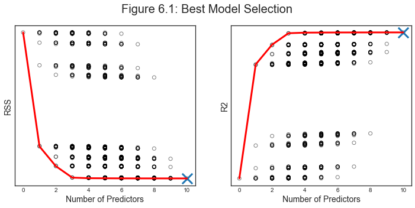
The figure shows that, as expected, both metrics improve as the number of variables increases; however, from the three-variable model on, there is little improvement in RSS and $R^2$ as a result of including additional predictors.
Forward Stepwise Selection
For computational reasons, best subset selection cannot be applied with very large $p$.
While the best subset selection procedure considers all $2^p$ possible models containing subsets of the p predictors, forward step-wise considers a much smaller set of models. Forward stepwise selection begins with a model containing no predictors, and then adds predictors to the model, one-at-a-time, until all of the predictors are in the model. In particular, at each step the variable that gives the greatest additional improvement to the fit is added to the model.
def forward_selection(X, y, f):
# Init RSS and R2
K = np.shape(X)[1]
fms_scores = np.zeros((K,1))
# Categorical variables
categ_cols = {"Gender", "Student", "Married", "Ethnicity"}
# Loop over p
selected_cols = []
for k in range(1,K+1):
# Loop over selected columns
remaining_cols = [col for col in X.columns if col not in selected_cols]
temp_scores = np.zeros((0,1))
# Loop on remaining columns
for col in remaining_cols:
# Subset X
X_subset = X.loc[:,selected_cols + [col]]
if k>0:
categ_subset = list(categ_cols & set(X_subset.columns))
X_subset = pd.get_dummies(X_subset, columns=categ_subset, drop_first=True)
# Regress
reg = OLS(y,add_constant(X_subset).values).fit()
# Metrics
temp_scores = np.append(temp_scores, f(reg))
# Pick best variable
best_col = remaining_cols[np.argmin(temp_scores)]
print(best_col)
selected_cols += [best_col]
fms_scores[k-1] = np.min(temp_scores)
return fms_scores
Let’s select the best model according, using the sum of squared residuals as a metric.
What are the most important variables?
# Forward selection by RSS
rss = lambda reg : reg.ssr
fms_RSS = forward_selection(X, y, rss)
Rating
Income
Student
Limit
Cards
Age
Ethnicity
Gender
Married
Education
What happens if we use $R^2$ instead?
# Forward selection by R2
r2 = lambda reg : -reg.rsquared
fms_R2 = -forward_selection(X, y, r2)
Rating
Income
Student
Limit
Cards
Age
Ethnicity
Gender
Married
Education
Unsurprisingly, both methods select the same models. Why? In the end $R^2$ is just a normalized version of RSS.
Let’s plot the scores of the two methods, for different number of predictors.
# New figure 1
def make_new_figure_1():
# Init
fig, (ax1,ax2) = plt.subplots(1,2)
fig.suptitle('Forward Model Selection')
# RSS
ax1.plot(range(1,K+1), fms_RSS, c='r');
ax1.scatter(np.argmin(fms_RSS)+1, np.min(fms_RSS), marker='x', s=300)
ax1.set_ylabel('RSS');
# R2
ax2.plot(range(1,K+1), fms_R2, c='r');
ax2.scatter(np.argmax(fms_R2)+1, np.max(fms_R2), marker='x', s=300)
ax2.set_ylabel('R2');
# All axes;
for ax in fig.axes:
ax.set_xlabel('Number of Predictors');
ax.set_yticks([]);
make_new_figure_1()
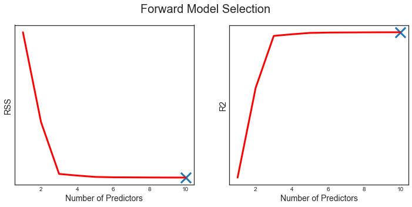
Backward Stepwise Selection
Like forward stepwise selection, backward stepwise selection provides an efficient alternative to best subset selection. However, unlike forward stepwise selection, it begins with the full least squares model containing all p predictors, and then iteratively removes the least useful predictor, one-at-a-time.
def backward_selection(X, y, f):
# Init RSS and R2
K = np.shape(X)[1]
fms_scores = np.zeros((K,1))
# Categorical variables
categ_cols = {"Gender", "Student", "Married", "Ethnicity"}
# Loop over p
selected_cols = list(X.columns)
for k in range(K,0,-1):
# Loop over selected columns
temp_scores = np.zeros((0,1))
# Loop on remaining columns
for col in selected_cols:
# Subset X
X_subset = X.loc[:,[x for x in selected_cols if x != col]]
if k>1:
categ_subset = list(categ_cols & set(X_subset.columns))
X_subset = pd.get_dummies(X_subset, columns=categ_subset, drop_first=True)
# Regress
reg = OLS(y,add_constant(X_subset).values).fit()
# Metrics
temp_scores = np.append(temp_scores, f(reg))
# Pick best variable
worst_col = selected_cols[np.argmin(temp_scores)]
print(worst_col)
selected_cols.remove(worst_col)
fms_scores[k-1] = np.min(temp_scores)
return fms_scores
Let’s select the best model according, using the sum of squared residuals as a metric.
What are the most important variables?
# Backward selection by RSS
rss = lambda reg : reg.ssr
bms_RSS = backward_selection(X, y, rss)
Education
Married
Gender
Ethnicity
Age
Rating
Cards
Student
Income
Limit
What if we use $R^2$ instead?
# Backward selection by R2
r2 = lambda reg : -reg.rsquared
bms_R2 = -backward_selection(X, y, r2)
Education
Married
Gender
Ethnicity
Age
Rating
Cards
Student
Income
Limit
The interesting part here is that the the variable Rating that was selected first by forward model selection, is now dropped $5^{th}$ to last. Why? It’s probably because it contains a lot of information by itself (hence first in FMS) but it’s highly correlated with Student, Income and Limit while these variables are more ortogonal to each other, and hence it gets dropped before them in BMS.
# Plot correlations
sns.pairplot(credit[['Rating','Student','Income','Limit']], height=1.8);
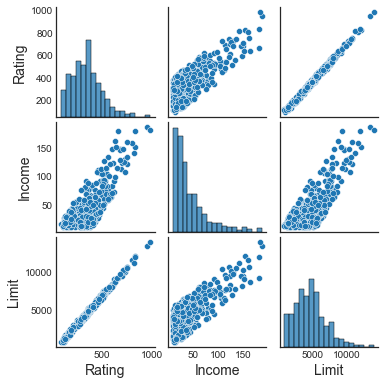
If is indeed what we see: Rating and Limit are highly correlated.
Let’s plot the scores for different number of predictors.
# New figure 2
def make_new_figure_2():
# Init
fig, (ax1,ax2) = plt.subplots(1,2)
fig.suptitle('Backward Model Selection')
# RSS
ax1.plot(range(1,K+1), bms_RSS, c='r');
ax1.scatter(np.argmin(bms_RSS)+1, np.min(bms_RSS), marker='x', s=300)
ax1.set_ylabel('RSS');
# R2
ax2.plot(range(1,K+1), bms_R2, c='r');
ax2.scatter(np.argmax(bms_R2)+1, np.max(bms_R2), marker='x', s=300)
ax2.set_ylabel('R2');
# All axes;
for ax in fig.axes:
ax.set_xlabel('Number of Predictors');
ax.set_yticks([]);
make_new_figure_2()
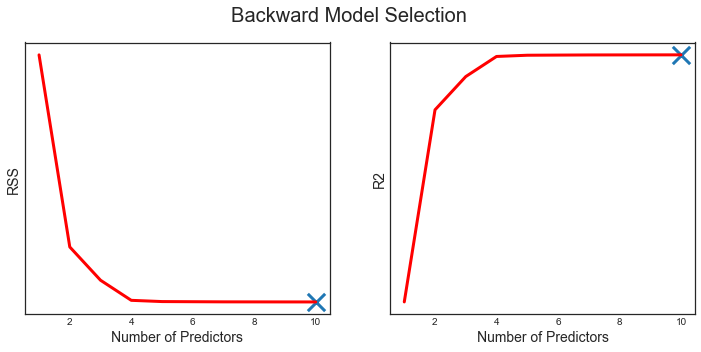
Choosing the Optimal Model
So far we have use the trainint error in order to select the model. However, the training error can be a poor estimate of the test error. Therefore, RSS and R2 are not suitable for selecting the best model among a collection of models with different numbers of predictors.
In order to select the best model with respect to test error, we need to estimate this test error. There are two common approaches:
- We can indirectly estimate test error by making an adjustment to the training error to account for the bias due to overfitting.
- We can directly estimate the test error, using either a validation set approach or a cross-validation approach.
Some metrics that account for the trainint error are
- Akaike Information Criterium (AIC)
- Bayesian Information Criterium (BIC)
- Adjusted $R^2$
The idea behind all these varaibles is to insert a penalty for the number of parameters used in the model. All these measure have theoretical fundations which are beyond the scope of this session.
We are now going to test the three metrics
# Set metrics
aic = lambda reg : reg.aic
bic = lambda reg : reg.bic
r2a = lambda reg : reg.rsquared_adj
# Compute best model selection scores
scores = model_selection(X, y, aic, bic, r2a)
ms_AIC = scores[0]
ms_BIC = scores[1]
ms_R2a = scores[2]
Computing k=10
# Save best scores
ms_AIC_best = [np.min(ms_AIC[ms_AIC[:,0]==k,1]) for k in range(K+1)]
ms_BIC_best = [np.min(ms_BIC[ms_BIC[:,0]==k,1]) for k in range(K+1)]
ms_R2a_best = [np.max(ms_R2a[ms_R2a[:,0]==k,1]) for k in range(K+1)]
We plot the scores for different model selection methods.
# Figure 6.2
def make_figure_6_2():
# Init
fig, (ax1,ax2,ax3) = plt.subplots(1,3, figsize=(16,5))
fig.suptitle('Figure 6.2')
# AIC
ax1.scatter(x=ms_AIC[:,0], y=ms_AIC[:,1], facecolors='None', edgecolors='k', alpha=0.5);
ax1.plot(range(K+1),ms_AIC_best, c='r');
ax1.scatter(np.argmin(ms_AIC_best), np.min(ms_AIC_best), marker='x', s=300)
ax1.set_ylabel('AIC');
# BIC
ax2.scatter(x=ms_BIC[:,0], y=ms_BIC[:,1], facecolors='None', edgecolors='k', alpha=0.5);
ax2.plot(range(K+1), ms_BIC_best, c='r');
ax2.scatter(np.argmin(ms_BIC_best), np.min(ms_BIC_best), marker='x', s=300)
ax2.set_ylabel('BIC');
# R2 adj
ax3.scatter(x=ms_R2a[:,0], y=ms_R2a[:,1], facecolors='None', edgecolors='k', alpha=0.5);
ax3.plot(range(K+1), ms_R2a_best, c='r');
ax3.scatter(np.argmax(ms_R2a_best), np.max(ms_R2a_best), marker='x', s=300)
ax3.set_ylabel('R2_adj');
# All axes;
for ax in fig.axes:
ax.set_xlabel('Number of Predictors');
ax.set_yticks([]);
make_figure_6_2()
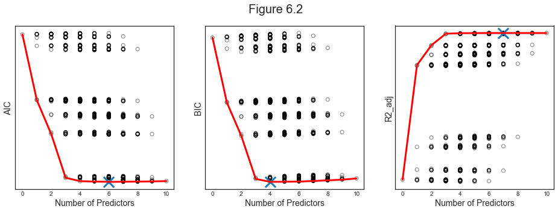
As we can see, all three metrics select more parsimonious models, with BIC being particularly conservative with only 4 variables and $R^2_{adj}$ selecting the larger model with 7 variables.
Validation and Cross-Validation
As an alternative to the approaches just discussed, we can directly estimate the test error using the validation set and cross-validation methods discussed in the previous session.
The main problem with cross-validation is the computational burden. We are now going to perform best model selection using the following cross-validation algorithms:
- Validation set approach, 50-50 split, repeated 10 times
- 5-fold cross-validation
- 10-fold cross-validation
We are not going to perform Leave-One-Out cross-validation for computational reasons.
def cv_scores(X, y, *args):
# Init
scores = list(itertools.repeat(np.zeros((0,2)), len(args)))
# Categorical variables
categ_cols = {"Gender", "Student", "Married", "Ethnicity"}
# Loop over all possible combinations of regressions
K = np.shape(X)[1]
for k in range(K+1):
print("Computing k=%1.0f" % k, end ="")
for i in combinations(range(K), k):
# Subset X
X_subset = X.iloc[:,list(i)]
# Get dummies for categorical variables
if k>0:
categ_subset = list(categ_cols & set(X_subset.columns))
X_subset = pd.get_dummies(X_subset, columns=categ_subset, drop_first=True)
# Metrics
for i,cv_method in enumerate(args):
score = cross_val_score(LinearRegression(), add_constant(X_subset), y,
cv=cv_method, scoring='neg_mean_squared_error').mean()
score_pair = np.reshape([k,score], (1,-1))
scores[i] = np.append(scores[i], score_pair, axis=0)
print("", end="\r")
return scores
Let’s compute the scores for different model selection methods.
# Define cv methods
vset = ShuffleSplit(n_splits=10, test_size=0.5)
kf5 = KFold(n_splits=5, shuffle=True)
kf10 = KFold(n_splits=10, shuffle=True)
# Get best model selection scores
scores = cv_scores(X, y, vset, kf5, kf10)
ms_vset = scores[0]
ms_kf5 = scores[1]
ms_kf10 = scores[2]
Computing k=10
# Save best scores
ms_vset_best = [np.max(ms_vset[ms_vset[:,0]==k,1]) for k in range(K+1)]
ms_kf5_best = [np.max(ms_kf5[ms_kf5[:,0]==k,1]) for k in range(K+1)]
ms_kf10_best = [np.max(ms_kf10[ms_kf10[:,0]==k,1]) for k in range(K+1)]
We not plot the scores.
# Figure 6.3
def make_figure_6_3():
# Init
fig, (ax1,ax2,ax3) = plt.subplots(1,3, figsize=(16,5))
fig.suptitle('Figure 6.3')
# Validation Set
ax1.scatter(x=ms_vset[:,0], y=ms_vset[:,1], facecolors='None', edgecolors='k', alpha=0.5);
ax1.plot(range(K+1),ms_vset_best, c='r');
ax1.scatter(np.argmax(ms_vset_best), np.max(ms_vset_best), marker='x', s=300)
ax1.set_ylabel('Validation Set');
# 5-Fold Cross Validation
ax2.scatter(x=ms_kf5[:,0], y=ms_kf5[:,1], facecolors='None', edgecolors='k', alpha=0.5);
ax2.plot(range(K+1), ms_kf5_best, c='r');
ax2.scatter(np.argmax(ms_kf5_best), np.max(ms_kf5_best), marker='x', s=300)
ax2.set_ylabel('5-Fold Cross Validation');
# 10-Fold Cross-Validation
ax3.scatter(x=ms_kf10[:,0], y=ms_kf10[:,1], facecolors='None', edgecolors='k', alpha=0.5);
ax3.plot(range(K+1), ms_kf10_best, c='r');
ax3.scatter(np.argmax(ms_kf10_best), np.max(ms_kf10_best), marker='x', s=300)
ax3.set_ylabel('10-Fold Cross-Validation');
# All axes;
for ax in fig.axes:
ax.set_xlabel('Number of Predictors');
ax.set_yticks([]);
make_figure_6_3()
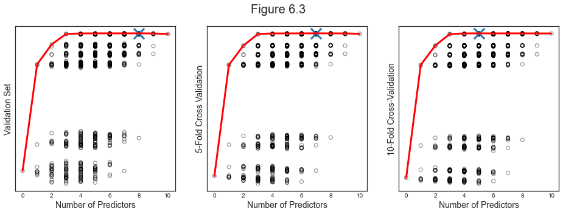
From the figure we see that each cross-validation method selects a different model and the most accurate one, K-fold CV, select 5 predictors.
5.2 Shrinkage Methods
Model selection methods constrained the number of varaibles before running a linear regression. Shrinkage methods attempt to do the two things simultaneously. In particular they constrain or shrink coefficients by imposing penalties in the objective functions for high values of the parameters.
Ridge Regression
The Least Squares Regression minimizes the Residual Sum of Squares
$$ \mathrm{RSS}=\sum_{i=1}^{n}\left(y_{i}-\beta_{0}-\sum_{j=1}^{p} \beta_{j} x_{i j}\right)^{2} $$
The Ridge Regression objective function instead is
$$ \sum_{i=1}^{n}\left(y_{i}-\beta_{0}-\sum_{j=1}^{p} \beta_{j} x_{i j}\right)^{2}+\lambda \sum_{j=1}^{p} \beta_{j}^{2}=\mathrm{RSS}+\lambda \sum_{j=1}^{p} \beta_{j}^{2} $$
where $\lambda>0$ is a tuning parameter that regulates the extent to which large parameters are penalized.
In matrix notation, the objective function is
$$ ||X\beta - y||^2_2 + \alpha ||\beta||^2_2 $$
which is equivalent to optimizing
$$ \frac{1}{N}||X\beta - y||^2_2 + \frac{\alpha}{N} ||\beta||^2_2 $$
We are now going to run Ridge Regression on the Credit dataset trying to explain account Balance with a set of observable individual characteristics.
# X and y
categ_cols = ["Gender", "Student", "Married", "Ethnicity"]
X = credit.loc[:, credit.columns != 'Balance']
X = pd.get_dummies(X, columns=categ_cols, drop_first=True)
y = credit.loc[:,'Balance']
n = len(credit)
We run ridge regression over a range of values for the penalty paramenter $\lambda$.
# Init alpha grid
n_grid = 100
alphas = 10**np.linspace(-2,5,n_grid).reshape(-1,1)
ridge = Ridge()
ridge_coefs = []
# Loop over values of alpha
for a in alphas:
ridge.set_params(alpha=a)
ridge.fit(scale(X), y)
ridge_coefs.append(ridge.coef_)
ridge_coefs = np.reshape(ridge_coefs,(n_grid,-1))
We use linear regression as a comparison.
# OLS regression
ols = LinearRegression().fit(scale(X),y)
ols_coefs = ols.coef_;
mod_ols = np.linalg.norm(ols_coefs)
# Relative magnitude
rel_beta = [np.linalg.norm(ridge_coefs[k,:])/mod_ols for k in range(n_grid)]
rel_beta = np.reshape(rel_beta, (-1,1))
We plot the results
# Figure 6.4
def make_figure_6_4():
# Init
fig, (ax1,ax2) = plt.subplots(1,2)
fig.suptitle('Figure 6.4: Ridge Regression Coefficients')
highlight = [0,1,2,7];
# Plot coefficients - absolute
ax1.plot(alphas, ridge_coefs[:,highlight], alpha=1)
ax1.plot(alphas, ridge_coefs, c='grey', alpha=0.3)
ax1.set_xscale('log')
ax1.set_xlabel('lambda'); ax1.set_ylabel('Standardized coefficients');
ax1.legend(['Income', 'Limit', 'Rating', 'Student'])
# Plot coefficients - relative
ax2.plot(rel_beta, ridge_coefs[:,highlight], alpha=1)
ax2.plot(rel_beta, ridge_coefs, c='grey', alpha=0.3)
ax2.set_xlabel('Relative Beta'); ax2.set_ylabel('Standardized coefficients');
make_figure_6_4()
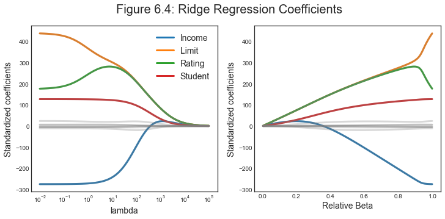
As we decrease $\lambda$, the Ridge coefficients get larger. Moreover, the variables with the consistently largest coefficients are Income, Limit, Rating and Student.
Bias-Variance Trade-off
Ridge regression’s advantage over least squares is rooted in the bias-variance trade-off. As $\lambda$ increases, the flexibility of the ridge regression fit decreases, leading to decreased variance but increased bias.
$$ y_0 = f(x_0) + \varepsilon $$
Recap: we can decompose the Mean Squared Error of an estimator into two components: the variance and the squared bias:
$$ \mathbb E\left(y_{0}-\hat{f}\left(x_{0}\right)\right)^{2} = \mathbb E\left(f(x_0) + \varepsilon - \hat f(x_{0})\right)^{2} = \ = \mathbb E\left(f(x_0) - \mathbb E[\hat f(x_{0})] + \varepsilon - \hat f(x_{0}) + \mathbb E[\hat f(x_{0})] \right)^{2} = \ = \mathbb E \left[ \mathbb E [\hat{f} (x_{0}) ] - f(x_0) \right]^2 + \mathbb E \left[ \left( \hat{f} (x_{0}) - \mathbb E [\hat{f} (x_{0})] \right)^2 \right] + \mathbb E[\varepsilon^2] \ = \operatorname{Bias} \left( \hat{f} (x_{0}) \right)^2 + \operatorname{Var}\left(\hat{f}\left(x_{0}\right)\right) + \operatorname{Var}(\varepsilon) $$
The last term is the variance of the error term, sometimes also called the irreducible error since it’s pure noise, and we cannot account for it.
# Compute var-bias
def compute_var_bias(X_train, b0, x0, a, k, n, sim, f):
# Init
y_hat = np.zeros(sim)
coefs = np.zeros((sim, k))
# Loop over simulations
for s in range(sim):
e_train = normal(0,1,(n,1))
y_train = X_train @ b0 + e_train
fit = f(a).fit(X_train, y_train)
y_hat[s] = fit.predict(x0)
coefs[s,:] = fit.coef_
# Compute MSE, Var and Bias2
e_test = normal(0,1,(sim,1))
y_test = x0 @ b0 + e_test
mse = np.mean((y_test - y_hat)**2)
var = np.var(y_hat)
bias2 = np.mean(x0 @ b0 - y_hat)**2
return [mse, var, bias2], np.mean(coefs, axis=0)
np.random.seed(1)
# Generate random data
n = 50
k = 45
N = 50000
X_train = normal(0.2,1,(n,k))
x0 = normal(0.2,1,(1,k))
e_train = normal(0,1,(n,1))
b0 = uniform(0,1,(k,1))
# Init alpha grid
sim = 1000
n_grid = 30
df = pd.DataFrame({'alpha':10**np.linspace(-5,5,n_grid)})
ridge_coefs2 = []
# Init simulations
sim = 1000
ridge = lambda a: Ridge(alpha=a, fit_intercept=False)
# Loop over values of alpha
for i in range(len(df)):
print("Alpha %1.0f/%1.0f" % (i+1,len(df)), end ="")
a = df.loc[i,'alpha']
df.loc[i,['mse','var','bias2']], c = compute_var_bias(X_train, b0, x0, a, k, n, sim, ridge)
ridge_coefs2.append(c)
print("", end="\r")
ridge_coefs2 = np.reshape(ridge_coefs2,(n_grid,-1))
Alpha 30/30
# OLS regression
y_train = X_train @ b0 + e_train
ols = LinearRegression().fit(X_train,y_train)
ols_coefs = ols.coef_;
mod_ols = np.linalg.norm(ols_coefs)
# Relative magnitude
rel_beta = [np.linalg.norm(ridge_coefs2[i,:])/mod_ols for i in range(n_grid)]
rel_beta = np.reshape(rel_beta, (-1,1))
# Figure 6.5
def make_figure_6_5():
# Init
fig, (ax1,ax2) = plt.subplots(1,2)
fig.suptitle('Figure 6.5: Ridge Bias-Var decomposition')
# MSE
ax1.plot(df['alpha'], df[['bias2','var','mse']]);
ax1.set_xscale('log');
ax1.set_xlabel('lambda'); ax1.set_ylabel('Mean Squared Error');
ax1.legend(['Bias2','Variance','MSE'], fontsize=12);
# MSE
ax2.plot(rel_beta, df[['bias2','var','mse']]);
ax2.set_xlabel('Relative Beta'); ax2.set_ylabel('Mean Squared Error');
ax2.legend(['Bias2','Variance','MSE'], fontsize=12);
make_figure_6_5()
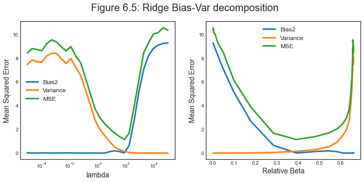
Ridge regression has the advantage of shrinking coefficients. However, unlike best subset, forward stepwise, and backward stepwise selection, which will generally select models that involve just a subset of the variables, ridge regression will include all $p$ predictors in the final model.
Lasso solves that problem by using a different penalty function.
Lasso
The lasso coefficients minimize the following objective function:
$$ \sum_{i=1}^{n}\left(y_{i}-\beta_{0}-\sum_{j=1}^{p} \beta_{j} x_{i j}\right)^{2}+\lambda \sum_{j=1}^{p}\left|\beta_{j}\right| = \mathrm{RSS} + \lambda \sum_{j=1}^p|\beta_j| $$
so that the main difference with respect to ridge regression is the penalty function $\lambda \sum_{j=1}^{p}\left|\beta_{j}\right|$ instead of $\lambda \sum_{j=1}^p (\beta_j)^2$.
A consequence of this objective function is that Lasso is much more likely to shrink coefficients to exactly zero, while Ridge only decreases their magnitude. The reason why lies in the shape of the objective function. You can rewrite the Ridge and Lasso minimization problems as constrained optimization:
-
Ridge $$ \underset{\beta}{\operatorname{min}} \ \left{\sum_{i=1}^{n}\left(y_{i}-\beta_{0}-\sum_{j=1}^{p} \beta_{j} x_{i j}\right)^{2}\right} \quad \text { subject to } \quad \sum_{j=1}^{p}\left|\beta_{j}\right| \leq s $$
-
Lasso $$ \underset{\beta}{\operatorname{min}} \ \left{\sum_{i=1}^{n}\left(y_{i}-\beta_{0}-\sum_{j=1}^{p} \beta_{j} x_{i j}\right)^{2}\right} \quad \text { subject to } \quad \sum_{j=1}^{p} \beta_{j}^{2} \leq s $$
In pictures, constrained optimization problem lookes like this.

The red curves represents the contour sets of the RSS. They are elliptical since the objective function is quadratic. The blue area represents the admissible set, i.e. the constraints. As we can see, it is much easier with Lasso to have the constrained optimum on one of the edges of the rhombus.
We are now going to repeat the same exercise on the Credit dataset, trying to predict account Balance with a set of obsevable induvidual characteristics, for different values of the penalty paramenter $\lambda$.
# X and y
categ_cols = ["Gender", "Student", "Married", "Ethnicity"]
X = credit.loc[:, credit.columns != 'Balance']
X = pd.get_dummies(X, columns=categ_cols, drop_first=True)
y = credit.loc[:,'Balance']
The $\lambda$ grid is going to be slightly different now.
# Init alpha grid
n_grid = 100
alphas = 10**np.linspace(0,3,n_grid).reshape(-1,1)
lasso = Lasso()
lasso_coefs = []
# Loop over values of alpha
for a in alphas:
lasso.set_params(alpha=a)
lasso.fit(scale(X), y)
lasso_coefs.append(lasso.coef_)
lasso_coefs = np.reshape(lasso_coefs,(n_grid,-1))
We run OLS to plot the relative magnitude of the Lasso coefficients.
# Relative magnitude
mod_ols = np.linalg.norm(ols_coefs)
rel_beta = [np.linalg.norm(lasso_coefs[i,:])/mod_ols for i in range(n_grid)]
rel_beta = np.reshape(rel_beta, (-1,1))
We plot the magnitude of the coefficients $\beta$
- for different values of $\lambda$
- for different values of of $||\beta||$
# Figure 6.6
def make_figure_6_6():
# Init
fig, (ax1,ax2) = plt.subplots(1,2)
fig.suptitle('Figure 6.6')
highlight = [0,1,2,7];
# Plot coefficients - absolute
ax1.plot(alphas, lasso_coefs[:,highlight], alpha=1)
ax1.plot(alphas, lasso_coefs, c='grey', alpha=0.3)
ax1.set_xscale('log')
ax1.set_xlabel('lambda'); ax1.set_ylabel('Standardized coefficients');
ax1.legend(['Income', 'Limit', 'Rating', 'Student'], fontsize=12)
# Plot coefficients - relative
ax2.plot(rel_beta, lasso_coefs[:,highlight], alpha=1)
ax2.plot(rel_beta, lasso_coefs, c='grey', alpha=0.3)
ax2.set_xlabel('relative mod beta'); ax2.set_ylabel('Standardized coefficients');
make_figure_6_6()
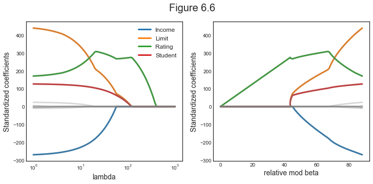
Rating seems to be the most important variable, followed by Limit and Student.
As with ridge regression, the lasso shrinks the coefficient estimates towards zero. However, in the case of the lasso, the $l_1$ penalty has the effect of forcing some of the coefficient estimates to be exactly equal to zero when the tuning parameter $\lambda$ is sufficiently large. Hence, much like best subset selection, the lasso performs variable selection.
We say that the lasso yields sparse models — that is, models that involve only a subset of the variable
We now plot how the choice of $\lambda$ affects the bias-variance trade-off.
# Init alpha grid
sim = 1000
n_grid = 30
df = pd.DataFrame({'alpha':10**np.linspace(-1,1,n_grid)})
lasso_coefs2 = []
# Init simulations
sim = 1000
lasso = lambda a: Lasso(alpha=a, fit_intercept=False)
# Loop over values of alpha
for i in range(len(df)):
print("Alpha %1.0f/%1.0f" % (i+1,len(df)), end ="")
a = df.loc[i,'alpha']
df.loc[i,['mse','var','bias2']], c = compute_var_bias(X_train, b0, x0, a, k, n, sim, lasso)
lasso_coefs2.append(c)
print("", end="\r")
lasso_coefs2 = np.reshape(lasso_coefs2,(n_grid,-1))
Alpha 30/30
# Relative magnitude
mod_ols = np.linalg.norm(ols_coefs)
rel_beta = [np.linalg.norm(lasso_coefs2[k,:])/mod_ols for k in range(n_grid)]
rel_beta = np.reshape(rel_beta, (-1,1))
# OLS regression
y_train = X_train @ b0 + e_train
ols = LinearRegression().fit(X_train,y_train)
ols_coefs = ols.coef_;
mod_ols = np.linalg.norm(ols_coefs)
# Relative magnitude
mod_ols = np.linalg.norm(ols_coefs)
rel_beta = [np.linalg.norm(lasso_coefs2[k,:])/mod_ols for k in range(n_grid)]
rel_beta = np.reshape(rel_beta, (-1,1))
# Figure 6.8
def make_figure_6_8():
fig, (ax1,ax2) = plt.subplots(1,2, figsize=(12,5))
fig.suptitle('Figure 6.8: Lasso Bias-Var decomposition')
# MSE
ax1.plot(df['alpha'], df[['bias2','var','mse']]);
ax1.set_xscale('log');
ax1.set_xlabel('lambda'); ax1.set_ylabel('Mean Squared Error');
ax1.legend(['Bias2','Variance','MSE'], fontsize=12);
# MSE
ax2.plot(rel_beta, df[['bias2','var','mse']]);
ax2.set_xlabel('Relative Beta'); ax1.set_ylabel('Mean Squared Error');
ax2.legend(['Bias2','Variance','MSE'], fontsize=12);
make_figure_6_8()
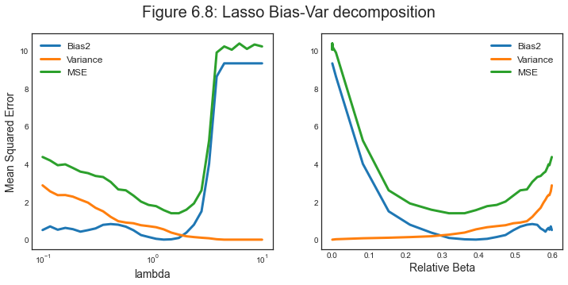
As $\lambda$ increases the squared bias increases and the variance decreases.
Comparing the Lasso and Ridge Regression
In order to obtain a better intuition about the behavior of ridge regression and the lasso, consider a simple special case with $n = p$, and $X$ a diagonal matrix with $1$’s on the diagonal and $0$’s in all off-diagonal elements. To simplify the problem further, assume also that we are performing regression without an intercept.
With these assumptions, the usual least squares problem simplifies to the coefficients that minimize
$$ \sum_{j=1}^{p}\left(y_{j}-\beta_{j}\right)^{2} $$
In this case, the least squares solution is given by
$$ \hat \beta_j = y_j $$
One can show that in this setting, the ridge regression estimates take the form
$$ \hat \beta_j^{RIDGE} = \frac{y_j}{1+\lambda} $$
and the lasso estimates take the form
$$ \hat{\beta}{j}^{LASSO}=\left{\begin{array}{ll} y{j}-\lambda / 2 & \text { if } y_{j}>\lambda / 2 \ y_{j}+\lambda / 2 & \text { if } y_{j}<-\lambda / 2 \ 0 & \text { if }\left|y_{j}\right| \leq \lambda / 2 \end{array}\right. $$
We plot the relationship visually.
np.random.seed(3)
# Generate random data
n = 100
k = n
X = np.eye(k)
e = normal(0,1,(n,1))
b0 = uniform(-1,1,(k,1))
y = X @ b0 + e
# OLS regression
reg = LinearRegression().fit(X,y)
ols_coefs = reg.coef_;
# Ridge regression
ridge = Ridge(alpha=1).fit(X,y)
ridge_coefs = ridge.coef_;
# Ridge regression
lasso = Lasso(alpha=0.01).fit(X,y)
lasso_coefs = lasso.coef_.reshape(1,-1);
# sort
order = np.argsort(y.reshape(1,-1), axis=1)
y_sorted = np.take_along_axis(ols_coefs, order, axis=1)
ols_coefs = np.take_along_axis(ols_coefs, order, axis=1)
ridge_coefs = np.take_along_axis(ridge_coefs, order, axis=1)
lasso_coefs = np.take_along_axis(lasso_coefs, order, axis=1)
# Figure 6.10
def make_figure_6_10():
# Init
fig, (ax1,ax2) = plt.subplots(1,2)
fig.suptitle('Figure 6.10')
# Ridge
ax1.plot(y_sorted.T, ols_coefs.T)
ax1.plot(y_sorted.T, ridge_coefs.T)
ax1.set_xlabel('True Coefficient'); ax1.set_ylabel('Estimated Coefficient');
ax1.legend(['OLS','Ridge'], fontsize=12);
# Lasso
ax2.plot(y_sorted.T, ols_coefs.T)
ax2.plot(y_sorted.T, lasso_coefs.T)
ax2.set_xlabel('True Coefficient'); ax2.set_ylabel('Estimated Coefficient');
ax2.legend(['OLS','Lasso'], fontsize=12);
make_figure_6_10()
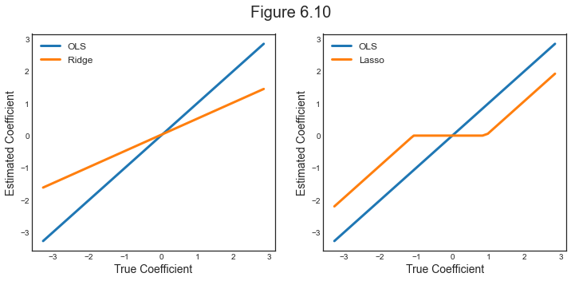
We see that ridge regression shrinks every dimension of the data by the same proportion, whereas the lasso hrinks all coefficients toward zero by a similar amount, and sufficiently small coefficients are shrunken all the way to zero.
Selecting the Tuning Parameter
Implementing ridge regression and the lasso requires a method for selecting a value for the tuning parameter $\lambda$.
Cross-validation provides a simple way to tackle this problem. We choose a grid of $\lambda$ values, and compute the cross-validation error for each value of $\lambda$. We then select the tuning parameter value for which the cross-validation error is smallest. Finally, the model is re-fit using all of the available observations and the selected value of the tuning parameter.
# X and y
categ_cols = ["Gender", "Student", "Married", "Ethnicity"]
X = credit.loc[:, credit.columns != 'Balance']
X = pd.get_dummies(X, columns=categ_cols, drop_first=True).values
y = credit.loc[:,'Balance']
n = len(credit)
We are going to use 10-fold CV as cross-validation algorithm.
# Get MSE
def cv_lasso(X,y,a):
# Init mse
mse = []
# Generate splits
kf10 = KFold(n_splits=10, random_state=None, shuffle=False)
kf10.get_n_splits(X)
# Loop over splits
for train_index, test_index in kf10.split(X):
X_train, X_test = X[train_index], X[test_index]
y_train, y_test = y[train_index], y[test_index]
lasso = Lasso(alpha=a).fit(X_train, y_train)
y_hat = lasso.predict(X_test)
mse.append(mean_squared_error(y_test, y_hat))
return np.mean(mse)
# Compute MSE over grid of alphas
n_grid = 30
alphas = 10**np.linspace(0,3,n_grid).reshape(-1,1)
MSE = [cv_lasso(X,y,a) for a in alphas]
What is the optimal $\lambda$?
# Find minimum alpha
alpha_min = alphas[np.argmin(MSE)]
print('Best alpha by 10fold CV:',alpha_min[0])
Best alpha by 10fold CV: 2.592943797404667
We now plot the objective function and the implied coefficients at the optimal $\lambda$.
# Get coefficients
coefs = []
# Loop over values of alpha
for a in alphas:
lasso = Lasso(alpha=a).fit(scale(X), y)
coefs.append(lasso.coef_)
coefs = np.reshape(coefs,(n_grid,-1))
np.shape(coefs)
(30, 11)
# Figure 6.12
def make_figure_6_12():
# Init
fig, (ax1,ax2) = plt.subplots(1,2)
fig.suptitle('Figure 6.12: Lasso 10-fold CV')
# MSE by LOO CV
ax1.plot(alphas, MSE, alpha=1);
ax1.axvline(alpha_min, c='k', ls='--')
ax1.set_xscale('log')
ax1.set_xlabel('lambda'); ax1.set_ylabel('MSE');
highlight = [0,1,2,7];
# Plot coefficients - absolute
ax2.plot(alphas, coefs[:,highlight], alpha=1)
ax2.plot(alphas, coefs, c='grey', alpha=0.3)
ax2.axvline(alpha_min, c='k', ls='--')
ax2.set_xscale('log')
ax2.set_xlabel('lambda'); ax2.set_ylabel('Standardized coefficients');
ax2.legend(['Income', 'Limit', 'Rating', 'Student'], fontsize=10);
make_figure_6_12()
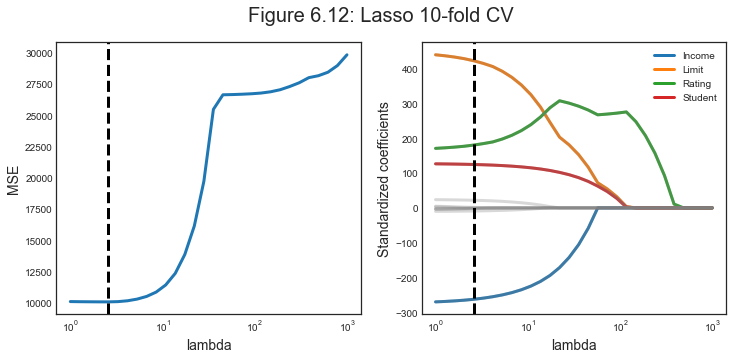